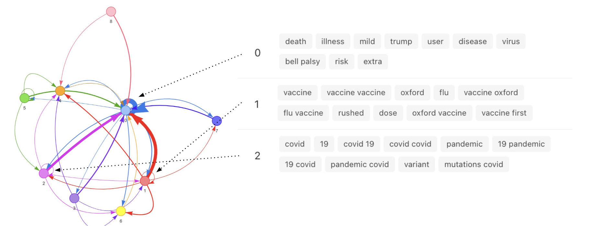

Psychological experiments on narrative formation in networked groups
While narratives have shaped cognition and cultures for centuries, digital media and online social networks have introduced
new narrative phenomena. With increased narrative agency, networked groups of individuals can directly
contribute and steer narratives that center our collective discussions of politics, science, and morality.
We report the results of an online network experiment on narrative and hashtag generation, in which
networked groups of participants interpreted a text-based narrative of a disaster event, and were
incentivized to produce matching hashtags with their network neighbors. We found that network structure
not only influences the emergence of dominant beliefs through coordination with network neighbors,
but also impacts participants' use of causal language in their personal narratives.
Article published in 2024 proceedings of Cognitive Science society
Political activism in real-world online social networks
The viral video documenting the killing of George Floyd by Minneapolis police officer Derek Chauvin
inspired nation-wide protests that brought national attention to widespread racial
injustice and biased policing practices towards black communities in the United States.
The use of social media by the Black Lives Matter movement was a primary route for activists
to promote the cause and organize over 1,400 protests across the country. Recent research argues
that moral discussions on social media are a catalyst for social change. This study sought to shed
light on the moral dynamics shaping Black Lives Matter Twitter discussions by analyzing over 40,000
tweets geo-located to Los Angeles. The goal of this study is to (1) develop computational techniques
for mapping the structure of moral discourse on Twitter and (2) understand the connections between
social media activism and protest.
AI system for modeling beliefs from natural language data
With computer scientists at USC I developed an artificial intelligence system that identities causal claims made in natural language. The model then references similar documents based on the content of their causal claims to produce a causal topic network. The state-of-the-art system is based on a large language model trained to identify instances of causal language, and was demonstrated at last summer's Association for Computational Linguistics. You can follow this tutorial to use the system to analyze causal language in a corpus by following this link: causal-claims.isi.edu.
 Example causal claim network produced from tweets about the Covid-19 vaccine. Topics (colored nodes in the network) are represented by their associated keywords (right of network). Network edges represent direction of causality between two topics.
Hardware: Mac Mini, television screen, philips hue smart light.
Software: Python, Pandas, Plotly, Phue.
The algorithm predicts the subject's latitude and longitude at time of observation using privately gathered data, and plots the prediction on a digital map. A green light illuminates when the subject is home.
The algorithm uses time and memory to predict the subject's behavior. Predicting another's intentions divides and separates us. Memory's error explodes with time, but our theories make no space for probabilistic uncertainty. We know less as time moves forward, but do our beliefs fade too?
What establishes an ethic for surveillance in a digital age, when billion dollar corporations track and monetize our most intimate patterns? And what constitutes consent when our private behavior is transformed to divide and unsettle?
Algorithms categorize, divide, and separate. Data is a mechanism of invasion and control. Scientists, engineers, artists, and the public must appreciate how privacy deteriorates as technology sinks its hooks deeper into our lives.